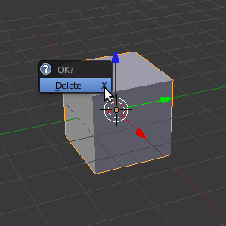
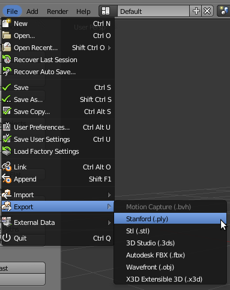

Interactive Iterative Closest Point¶
This tutorial will teach you how to write an interactive ICP viewer. The program will load a point cloud and apply a rigid transformation on it. After that the ICP algorithm will align the transformed point cloud with the original. Each time the user presses “space” an ICP iteration is done and the viewer is refreshed.
Contents
Creating a mesh with Blender¶
You can easily create a sample point cloud with Blender. Install and open Blender then delete the cube in the scene by pressing “Del” key :
{kind=link}
Add a monkey mesh in the scene :

Subdivide the original mesh to make it more dense :

Configure the subdivision to 2 or 3 for example : don’t forget to apply the modifier

Export the mesh into a PLY file :
{kind=link}
The code¶
First, create a file, let’s say, interactive_icp.cpp in your favorite
editor, and place the following code inside it:
The explanations¶
Now, let’s break down the code piece by piece.
We include all the headers we will make use of. #include <pcl/registration/ia_ransac.h> allows us to use pcl::transformPointCloud function. #include <pcl/console/parse.h>> allows us to use parse the arguments given to the program.
Two typedefs to simplify declarations and code reading. The bool will help us know when the user asks for the next iteration of ICP
This function takes the reference of a 4x4 matrix and prints the rigid transformation in an human readable way.
This function is the callback for the viewer. This function will be called whenever a key is pressed when the viewer window is on top. If “space” is hit; set the bool to true.
The 3 point clouds we will use to store the data.
We check the arguments of the program, set the number of initial ICP iterations and try to load the PLY file.
We transform the original point cloud using a rigid matrix transformation. See the related tutorial in PCL documentation for more information. cloud_in contains the original point cloud. cloud_tr and cloud_icp contains the translated/rotated point cloud. cloud_tr is a backup we will use for display (green point cloud).
This is the creation of the ICP object. We set the parameters of the ICP algorithm. setMaximumIterations(iterations) sets the number of initial iterations to do (1 is the default value). We then transform the point cloud into cloud_icp. After the first alignment we set ICP max iterations to 1 for all the next times this ICP object will be used (when the user presses “space”).
Check if the ICP algorithm converged; otherwise exit the program. In case of success we store the transformation matrix in a 4x4 matrix and then print the rigid matrix transformation. The reason why we store this matrix is explained later.
For the visualization we create two viewports in the visualizer vertically separated. bckgr_gray_level and txt_gray_lvl are variables to easily switch from white background & black text/point cloud to black background & white text/point cloud.
We add the original point cloud in the 2 viewports and display it the same color as txt_gray_lvl. We add the point cloud we transformed using the matrix in the left viewport in green and the point cloud aligned with ICP in red (right viewport).
We add descriptions for the point clouds in each viewport so the user knows what is what. The string stream ss is needed to transform the integer iterations into a string.
We set the two viewports background color according to bckgr_gray_level. To get the camera parameters I simply pressed “C” in the viewer. Then I copied the parameters into this function to save the camera position / orientation / focal point. The function registerKeyboardCallback allows us to call a function whenever the users pressed a keyboard key when viewer windows is on top.
This is the normal behaviour if no key is pressed. The viewer waits to exit.
If the user press any key of the keyboard, the function keyboardEventOccurred is called; this function checks if the key is “space” or not. If yes the global bool next_iteration is set to true, allowing the viewer loop to enter the next part of the code: the ICP object is called to align the meshes. Remember we already configured this object input/output clouds and we set max iterations to 1 in lines 90-93.
As before we check if ICP as converged, if not we exit the program. printf(“033[11A”); is a little trick to go up 11 lines in the terminal to write over the last matrix displayed. In short it allows to replace text instead of writing new lines; making the output more readable. We increment iterations to update the text value in the visualizer.
Now we want to display the rigid transformation from the original transformed point cloud to the current alignment made by ICP. The function getFinalTransformation() returns the rigid matrix transformation done during the iterations (here: 1 iteration). This means that if you have already done 10 iterations this function returns the matrix to transform the point cloud from the iteration 10 to 11.
This is not what we want. If we multiply the last matrix with the new one the result is the transformation matrix from the start to the current iteration. This is basically how it works
matrix[ICP 0->1]*matrix[ICP 1->2]*matrix[ICP 2->3] = matrix[ICP 0->3]
While this is mathematically true, you will easily notice that this is not true in this program due to roundings. This is why I introduced the initial ICP iteration parameters. Try to launch the program with 20 initial iterations and save the matrix in a text file. Launch the same program with 1 initial iteration and press space till you go to 20 iterations. You will a notice a slight difference. The matrix with 20 initial iterations is much more accurate than the one multiplied 19 times.
We set the bool to false and the rest is the ending of the program.
Compiling and running the program¶
Add the following lines to your CMakeLists.txt file:
After you have made the executable, you can run it. Simply do:
$ ./interactive_icp monkey.ply 1
Remember that the matrix displayed is not very accurate if you do a lot of iterations by pressing “space”.
You will see something similar to this:
$ ./interactive_icp ../monkey.ply 5
[pcl::PLYReader] ../monkey.ply:12: property 'list uint8 uint32 vertex_indices' of element 'face' is not handled
Loaded file ../monkey.ply (125952 points) in 578 ms
Applying this rigid transformation to: cloud_in -> cloud_icp
Rotation matrix :
| 0.924 -0.383 0.000 |
R = | 0.383 0.924 0.000 |
| 0.000 0.000 1.000 |
Translation vector :
t = < 0.000, 0.000, 0.400 >
Applied 1 ICP iteration(s) in 2109 ms
ICP has converged, score is 0.0182442
ICP transformation 1 : cloud_icp -> cloud_in
Rotation matrix :
| 0.998 0.066 -0.003 |
R = | -0.066 0.997 0.033 |
| 0.005 -0.033 0.999 |
Translation vector :
t = < 0.022, -0.017, -0.097 >
If ICP did a perfect job the two matrices should have exactly the same values and the matrix found by ICP should have inverted signs outside the diagonal. For example
| 0.924 -0.383 0.000 |
R = | 0.383 0.924 0.000 |
| 0.000 0.000 1.000 |
Translation vector :
t = < 0.000, 0.000, 0.400 >
| 0.924 0.383 0.000 |
R = | -0.383 0.924 0.000 |
| 0.000 0.000 1.000 |
Translation vector :
t = < 0.000, 0.000, -0.400 >
Danger
If you iterate several times manually using “space”; the results will become more and more erroned because of the matrix multiplication (see line 181 of the original code) If you seek precision, provide an initial number of iterations to the program

After 25 iterations the models fits perfectly the original cloud. Remember that this is an easy job for ICP because you are asking to align two identical point clouds !